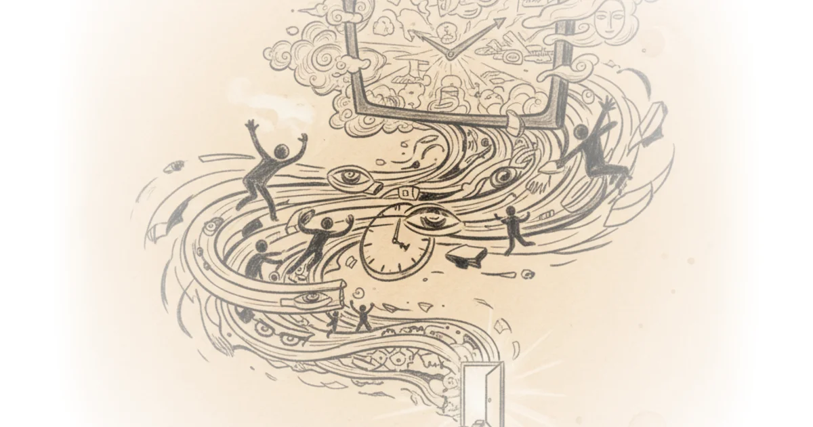

Tom van der Linden challenges the prevailing cynicism that modern audiences lack the patience for long-form storytelling, arguing instead that 2025 proved television's unique power to seize collective focus. While many critics predict the death of the multi-week narrative in the age of short-form content, van der Linden curates a list that suggests the opposite: we are hungrier than ever for stories that demand time and reward it with depth.
The Metrics of Engagement
The author's approach to ranking is refreshingly subjective, moving beyond technical filmmaking to measure the emotional resonance of the viewing experience. He explicitly states his criteria: "besides just looking at the general film making and storytelling qualities, some other metrics that I took into account here was how much I was looking forward to each new episode, how surprising a show was in its overall progression, and how long it stayed with me afterwards." This shift from objective critique to personal impact is a bold move that validates the reader's own emotional investment as a legitimate metric for quality.

He acknowledges that narrowing the field is painful, admitting that "I'm already leaving out a lot of good stuff, like Task, which I thought was a compelling crime drama with great leading performances from Mark Ruffalo and Tom Belelfrey." By naming these honorable mentions, van der Linden establishes credibility; he isn't ignoring the competition, he is simply prioritizing the shows that left a deeper mark. This honesty prevents the list from feeling like a generic aggregation of popular titles.
"Television shows continue to occupy an interesting place in our current media landscape as the idea of capturing our ongoing attention for multiple weeks on end feels increasingly difficult in a time where that attention seems to move on quicker than ever."
The author's observation that attention spans are shrinking is a common trope, yet his evidence suggests a counter-narrative. He points to shows like Murderbot, which initially seemed slow but "sneaks up on you as this cozy show that's more about the characters than it is about intricate plotting." This highlights a crucial distinction: the audience isn't losing patience; they are becoming more selective about what deserves their time.
The Nuance of Sequels and Revivals
A significant portion of the commentary focuses on the difficulty of reviving beloved franchises, a topic where van der Linden offers a balanced, nuanced perspective. He praises Severance for its "immaculate" filmmaking but critiques its emotional distance, noting that "this season felt like it became more about the big mystery... and that I kind of missed the fun factor that was more prominently present in the first season." This willingness to praise a show's aesthetic while critiquing its soulful core demonstrates a sophisticated understanding of sequel fatigue.
Similarly, his take on Dexter Resurrection is surprisingly optimistic for a legacy sequel. He admits he had stopped watching the original after season four, yet found the new iteration "locked in" once it moved past nostalgia. He describes the show's success as a "wonderfully heightened expression of the awkwardness we all experience at times when we're feeling a bit out of place." This reframing of a serial killer drama as a study in social alienation is a compelling lens that elevates the genre.
Critics might argue that celebrating a show like Dexter ignores the problematic history of the original series' finale, but van der Linden sidesteps this by focusing strictly on the new narrative's pacing and character work. He notes that the story "moves so fast and in a good way... where each episode feels consequential and constantly subverts the previously established status quo."
"It's just such a timely story. Not in the sense that it's directly allegorical or overly detactic, but in such a way that it symbolically speaks to deeper feelings of powerlessness and subsequently works through those feelings by invoking a real and meaningful sense of hope."
This quote, referring to Andor, encapsulates the author's broader thesis: great television doesn't just entertain; it processes complex societal emotions. He argues that Andor succeeds where other Star Wars entries fail because it is "not about the Jedi," allowing it to explore the "insidious mechanics of oppression" without the distraction of magical superpowers.
The Mirror of the Hive Mind
The commentary reaches its intellectual peak when discussing Plurabus, a fictional show about a virus creating a hive mind. Van der Linden argues that the show flips the standard sci-fi trope on its head. "Normally it's the alien presence that clearly captures the critiqued aspect of humanity... But here, it feels like the hive mind is more of a mirror that reflects the flaws of the beholder."
This analysis suggests that the true horror isn't the loss of individuality, but the painful realization of our own isolation. The show posits that our individualistic nature leaves us "never being able to fully know those close to us." This is a profound take on the genre, moving away from "unthinking mobs" to a critique of the loneliness inherent in the human condition.
"The loss of an objective reality is perhaps the most dangerous."
While the author is clearly a fan of the show's production value, calling every scene a "setpiece," he grounds his praise in the thematic weight of the story. He suggests that the show's "globe spanning tale" is ultimately about the "psychological and emotional isolation" of the few remaining individuals.
Bottom Line
Tom van der Linden's list succeeds because it prioritizes emotional resonance over technical perfection, offering a curated guide for viewers seeking substance in a fragmented media landscape. His strongest argument is that the best shows of 2025 are those that use their format to explore the human condition, from the alienation of Plurabus to the social awkwardness of Dexter. The piece's only vulnerability is its heavy reliance on the author's personal taste, which, while engaging, may not align with viewers who prefer traditional plot-driven narratives over character studies.